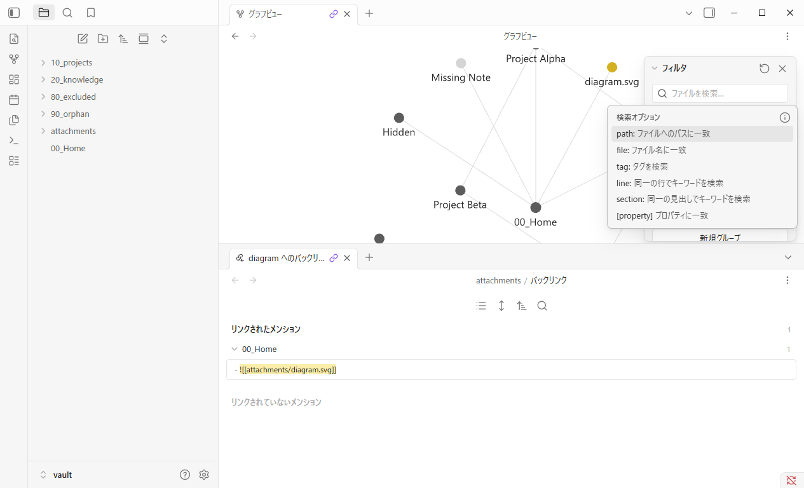
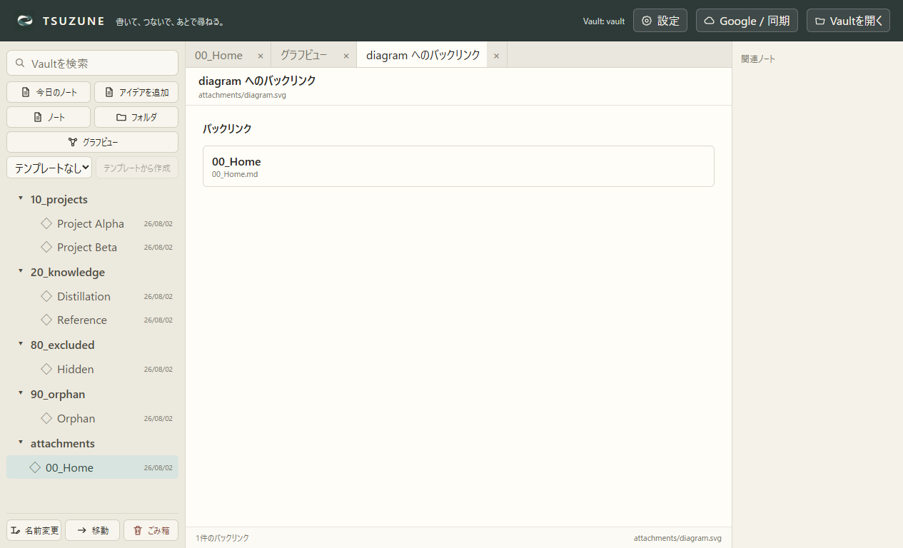
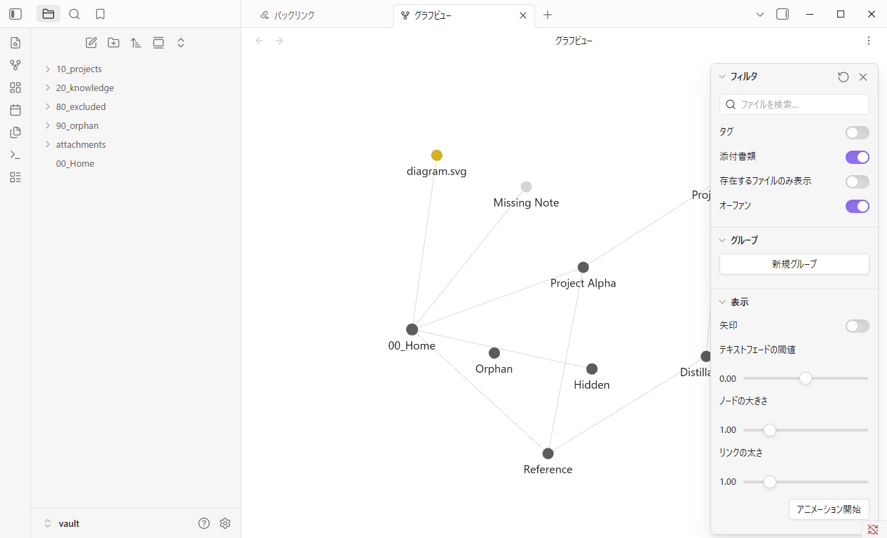
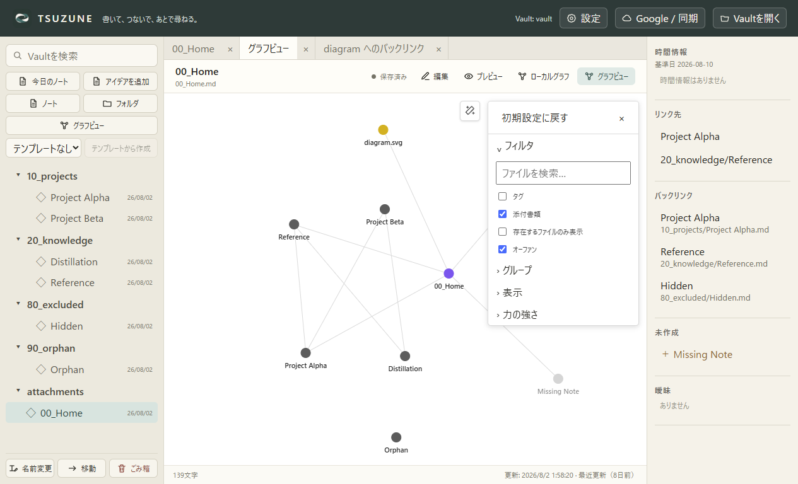

GP0-3b-m · 固定公開UI比較
リンクされたビューから、参照元へ戻れる。
Obsidian Desktop 1.13.4とTSUZUNEを同じfixture、Global Graph、1265×768、DPR 1、ライトテーマで比較しました。
matched-core-behavior: 添付linked view
操作結果




比較
| 確認項目 | Obsidian | TSUZUNE | 判定 |
|---|---|---|---|
| 「リンクされたビューを開く」を親menuから開ける | true | true | matched |
| submenuの先頭かつ唯一の有効操作が「バックリンクを開く」 | true | true | matched |
| 対象添付のバックリンクビューを開き、対象pathと参照元を表示する | true | true | matched |
| 操作後もGlobal Graphのnode・edgeとGraph tabを保持する | true | true | matched |
| Graph再表示・別プロセス再起動後もGraphの構造を保持する | true | true | matched |
| linked-viewの別プロセス再起動後の扱い | バックリンクtab shellを保持。対象添付へのbindingは未証明 | linked-view tabを復元しない | known-gap-outside-slice |
| 添付nodeのcontext menu全体 | 11 | 7 | known-gap-outside-slice |
境界
中核一致は起動中の操作とGraph保持です。TSUZUNEはlinked-view tabを再起動後に復元せず、Obsidianはバックリンクtab shellを保持しますが対象添付へのbindingは未証明です。context menu全体、分割pane、視覚的な1:1一致、物理入力／実OSアクセシビリティも完了扱いにしていません。